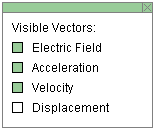
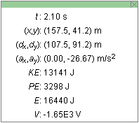
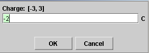
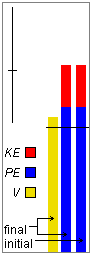

There are four basic control buttons. They are, from left to right:
-
 Rewind. Resets the simulation to the
initial position with the previously chosen initial
values. If you have the particle path displayed, Rewind
will allow you to compare paths traversed under
different conditions, e.g., different initial
velocities.
Rewind. Resets the simulation to the
initial position with the previously chosen initial
values. If you have the particle path displayed, Rewind
will allow you to compare paths traversed under
different conditions, e.g., different initial
velocities.
After clicking Rewind, click Play to restart the motion.
-
 Play/Pause. Starts the motion.
Play/Pause. Starts the motion.
After Play has been clicked, the button will change into the Pause button
 .
Clicking Pause will freeze the motion. To resume the
motion, click Play once more.
.
Clicking Pause will freeze the motion. To resume the
motion, click Play once more.
- Step. Lets you step through the motion in equal time steps.
-
 Reset. Resets the applet to its default setting.
Reset. Resets the applet to its default setting.
Adjustments in the initial conditions can only be made after first clicking REWIND or RESET.

To set the particle's initial position, click on the particle and drag. To make it easier to achieve a certain set of initial (x,y) values, hold down the SHIFT key while dragging the particle. This will allow dragging in either the horizontal or vertical directions only, thus making it easier to set one of the two coordinates at a time.
When the particle is at the position you want, click the Initial button . This will accomplish four things.
- It will make the applet remember this position. If you click REWIND, the particle will be returned to this position.
- It will cause the particle's displacement vector to be taken from this initial point.
- It will make the applet remember the particle's initial velocity. If you click REWIND after PLAYing the motion, the particle will be returned to its initial position with its initial velocity.
- It will set the potential and kinetic energies in the energy bar that is labeled "initial" to the values at this initial position. The energy values displayed by the "initial" bar will not change during the subsequent motion. More about the energy bars in Point 12 below.

Displays or hides the particle's path in cyan.
The path is not erased when you click the Rewind button.

When the Grid button is selected, a rectangular set of coordinate grid lines is displayed.
The grid makes it easier to set the particle's initial position and to observe the particle's path.
To set the particle's initial position, click on the particle and drag. To make it easier to achieve a certain set of initial (x,y) values, hold down the SHIFT key while dragging the particle. This will allow dragging in either the horizontal or vertical directions only, thus making it easier to set one of the two coordinates at a time. See the following Point 6 on how to lock the initial position.

This toggle button displays or hides the Vector Panel shown below on which you can select the vectors that you want to have displayed. In the Vector Panel shown below, three vectors are selected: Electric Field, Acceleration, and Velocity. The Displacement is not selected. This is also the selection in the image at the top of this Help document where the three selected vectors are displayed in green, orange, and magenta, respectively.



Displays or hides the draggable Data box, shown above, as well as the draggable Energy box. The latter, which shows energy bars, can be seen in the picture at the beginning of this Help file. In that picture, the Data box has been closed by clicking the "X" in the top right corner of the Data box. Information about the Energy box is provided in Point 12 below.
The Data box displays the following information:
- t: time elapsed since the beginning of the motion
- (x,y): coordinates of the particle at time t relative to a coordinate grid that can be displayed by selecting the Grid button; the x-axis points to the right, the y-axis upward
- (dx,dy): displacement of the particle at time t, measured either from the particle's default position or from the position at which the Initial button; see Point 2 above for details about this button
- (ax,ay): acceleration of the particle at time t
- KE: kinetic energy of the particle at time t
- PE: potential energy of the particle in the electric field at time t where PE is defined so that PE = 0 when the particle is at (x,y) = (0,0)
- E = PE + KE: energy of the particle in the electric field with PE defined as above
- V: electric potential at the location of the particle

When the Coordinates button is selected, clicking at some location in the applet window will mark that location with a "+" and display the x,y coordinates of the location. This way you can measure the coordinates of a point. The electric potential V at that point will be displayed also.
The marker can be dragged to a new location as long as the mouse button is depressed. If the SHIFT key is held down while dragging, the marker will move only in the horizontal or vertical directions. As many locations as are needed can be marked in this manner.
One can return the mouse pointer to a location marker at a later time and drag the marker some more.
Double-clicking on a marker will remove it, but only if the Coordinates button is selected at the time. One can remove a marker at any time, even if the Coordinates button had been deselected after placing the marker, as long as this button is selected when one double-clicks on the marker.

Equipotential Line

When a field point marker has been set at some point with the Coordinates button as explained in the preceding Point 7, the electric field line (in green) and equipotential line (in mustard color) through that point can be displayed by clicking the Field Line button or Equipotential Line button, respectively.
When a line is displayed, its button becomes inactive. It becomes active again when another field point marker is set.
Dragging the field point marker will cause the field line and equipotential line through that point to be dragged along.
Two data fields are available to specify the initial velocity vector. Enter values in the two fields and press ENTER on the keyboard to set the initial velocity. The magenta velocity vector, if displayed, will be adjusted accordingly. Alternatively, you can drag the tip of the velocity vector. The values in the two velocity data fields will be adjusted accordingly.
During the motion, the values in the velocity data fields and the magenta arrow will represent the instantaneous velocity.
Four different modes are available for specifying the
velocity vector numerically. Choose between them by
clicking the button  to the
left of the velocity data entry fields. The button will
let you cycle through the four possibilities:
to the
left of the velocity data entry fields. The button will
let you cycle through the four possibilities:
-
Polar (positive)
The vector is specified by its polar coordinates: magnitude and direction angle. The direction angle is taken between the vector and the 'East' direction (positive x direction). All angles are positive between 0 and 3600, increasing in the counter-clockwise sense starting with the East direction.
-
Polar (pos & neg)
The mode is like the Polar (positive) mode, except that the angles are taken to be in the range from -1800 to 1800. The angle is negative if a vector points to a point below the horizontal axis, and it is positive otherwise.
-
Navigational

The mode is like the Polar (positive) mode, except that angles are taken relative to one of the four compass directions, either in the clockwise or counter-clockwise sense. This allows for eight different ways of specifying the angle, from east of north (E of N), to north of east (N of E), to west of north (W of N). The choice can be made from a drop-down menu that becomes available in the Navigational mode. All angles range from 0 to 3600.
-
Cartesian
(vx,vy)

The vector is specified by its x and y components relative to the horizontal x-axis and the vertical y-axis.
Two data fields are available to specify the electric field vector. The electric field is uniform, which means that the electric field vector is the same at all points in the applet window.
To set the vector, enter values in the two data fields and press ENTER on the keyboard. The green electric field vector, if displayed, will be adjusted accordingly. Alternatively, you can drag the tip of the green electric field vector. The values in the two data fields will be adjusted accordingly.
The same four modes of data entry are available as for the velocity. For details, please see the preceding Point 9.
There are two sliders, for adjusting the charge and mass of the particle. The charge can be varied from -3 C to 3 C in steps of 1 C. The mass can be varied from 1.0 kg to 3.0 kg in steps of 0.1 kg.
Clicking on a slider to the left or right of the slider tab allows fine adjustment of the slider setting.
Clicking on the Input Dialog button  of a slider will open a dialog for entering an
exact value for the slider setting. The dialog for the
Charge-slider is illustrated below. The range in which
values can be entered, from -3 C to 3 C in this
case, is indicated above the data entry field.
of a slider will open a dialog for entering an
exact value for the slider setting. The dialog for the
Charge-slider is illustrated below. The range in which
values can be entered, from -3 C to 3 C in this
case, is indicated above the data entry field.


When the Data button is selected, two draggable boxes are displayed: the Data box (see Point 6 above) and the Energy box, shown in the preceding image.
The Energy box contains three columns, which display from left to right:
- the electric potential V at the current particle position,
- the current kinetic energy KE and current electric potential energy PE of the particle,
- the initial kinetic and electric potential energies of the particle.
The "initial" moment to which the kinetic and potential energies correspond is the moment when the Initial button is clicked. If this button is not clicked, then the default energies upon resetting the applet are taken as the initial energies.
The horizontal black line across the middle of the energy bars indicates the level of zero potential energy and zero electric potential.
The Energy box contains a vertical slider in its upper left region. See the image in the preceding Point 12. The short cross bar can be dragged up or down to increase or decrease, respectively, the height of the energy and potential bars.
The scale factor that determines the size of the bars is applied to the potential energy and the electric potential relative to their zero level, i.e., such that the level indicated by the line crossing all three bars remains in the same position.